第一轮是 10/30 华发舆情 + 赎回的事件冲击，11/06 前修复 58%；第二轮从 11/09 开始，没有单一触发，是 资金面收紧 + 信用长尾的广谱重定价，11/20 修复仅 26%。本页把第二轮的全部明细摊开，并与第一轮专题的四个深度页放在同一入口。
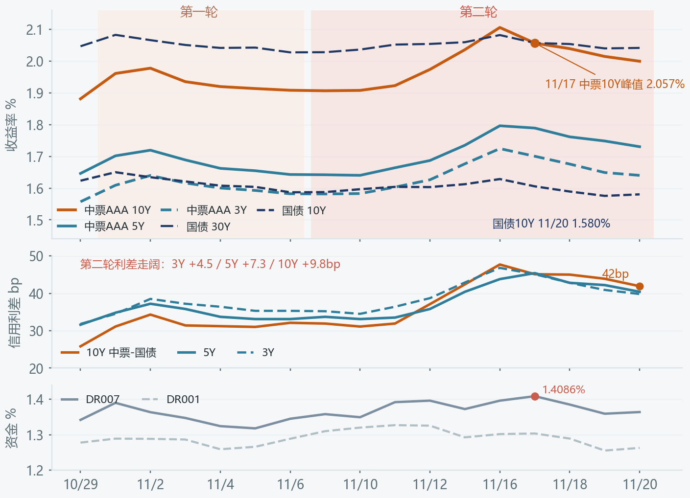
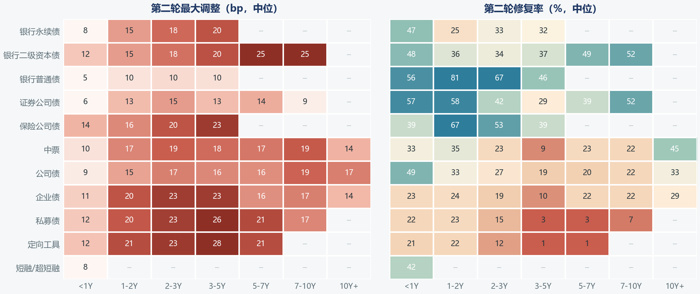
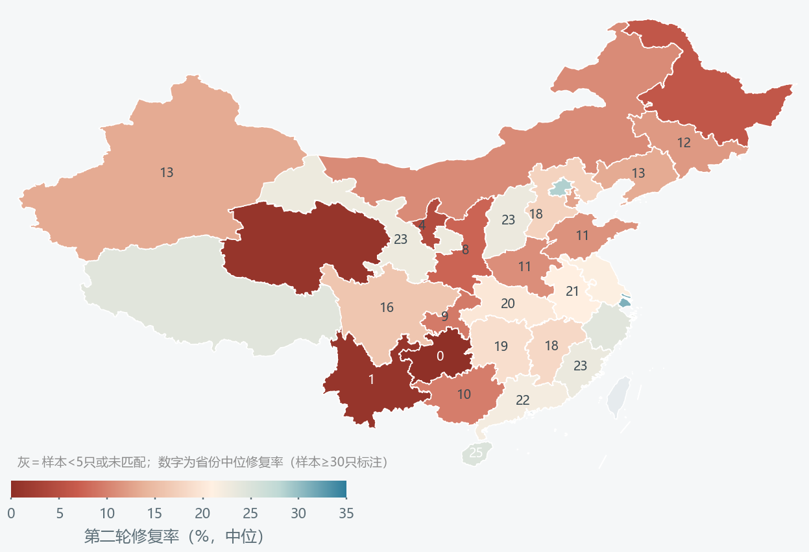
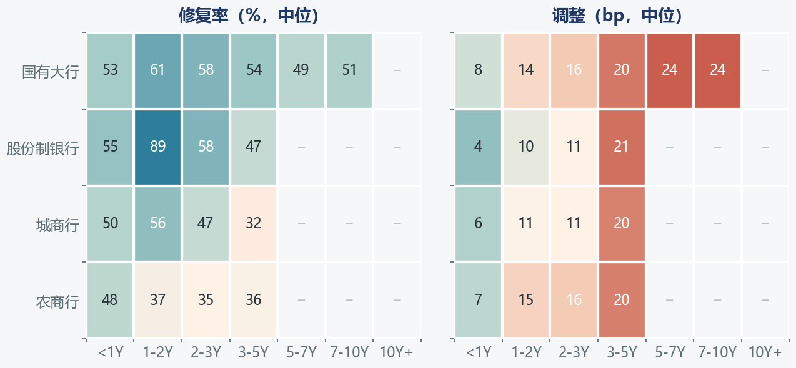
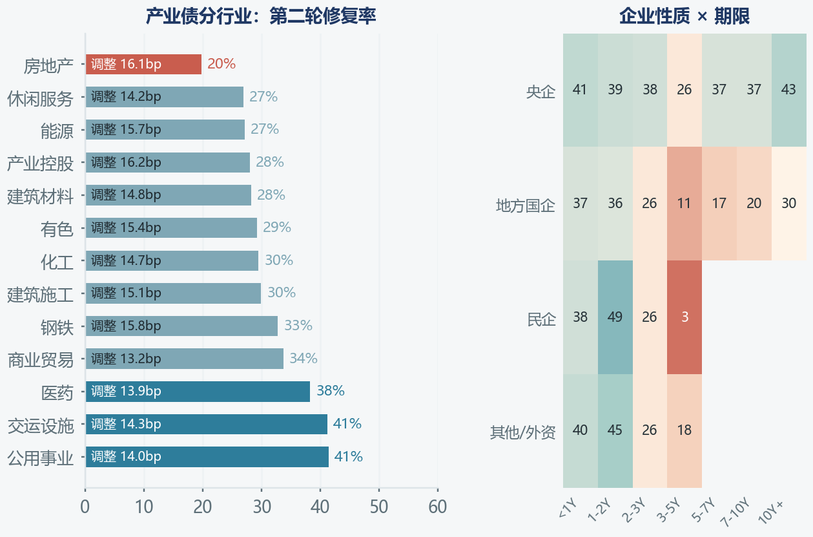
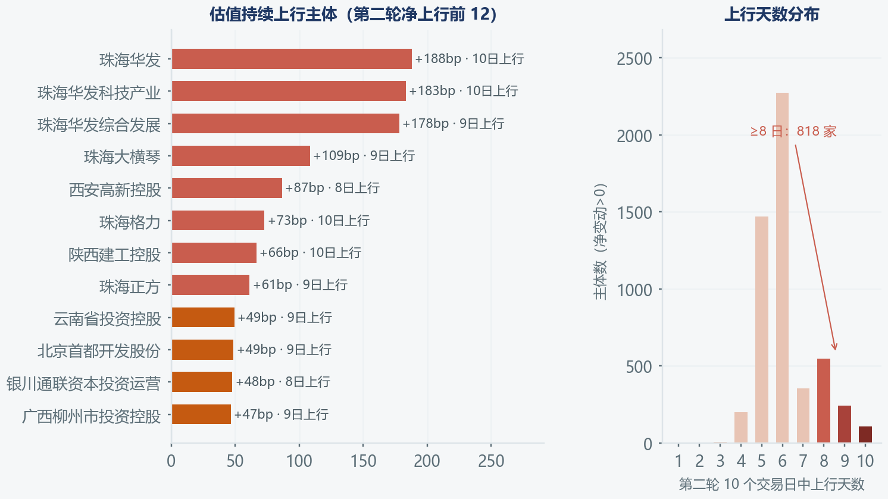
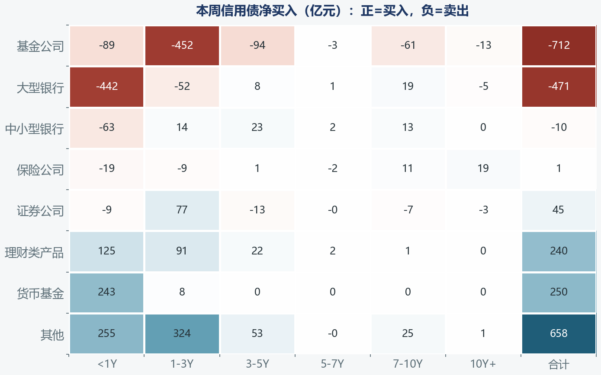
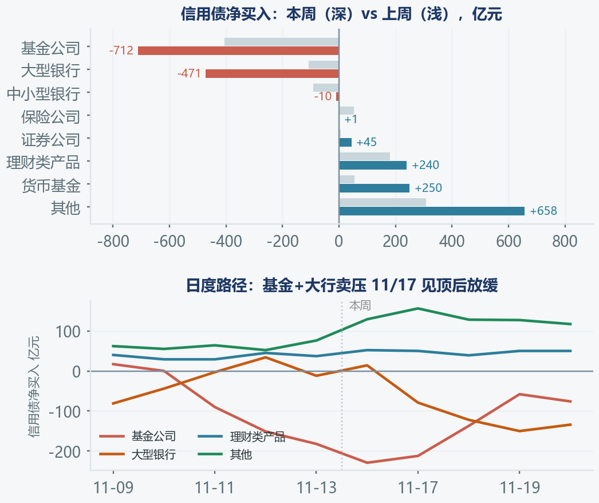
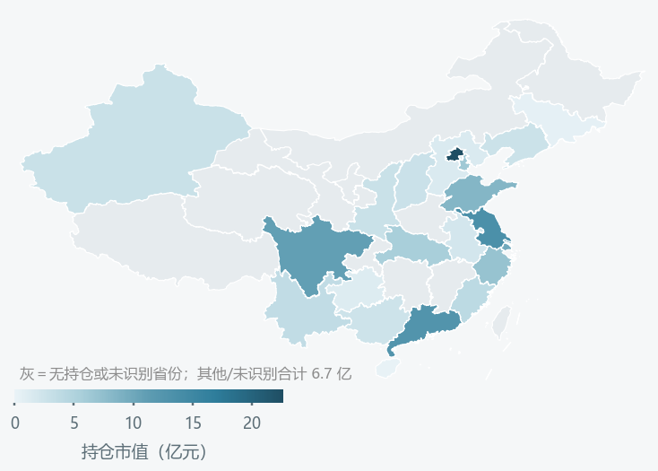
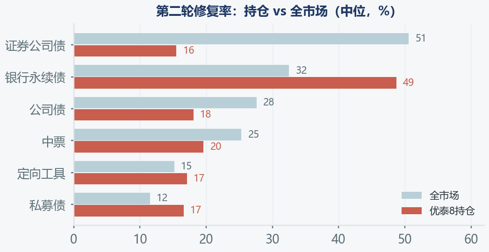
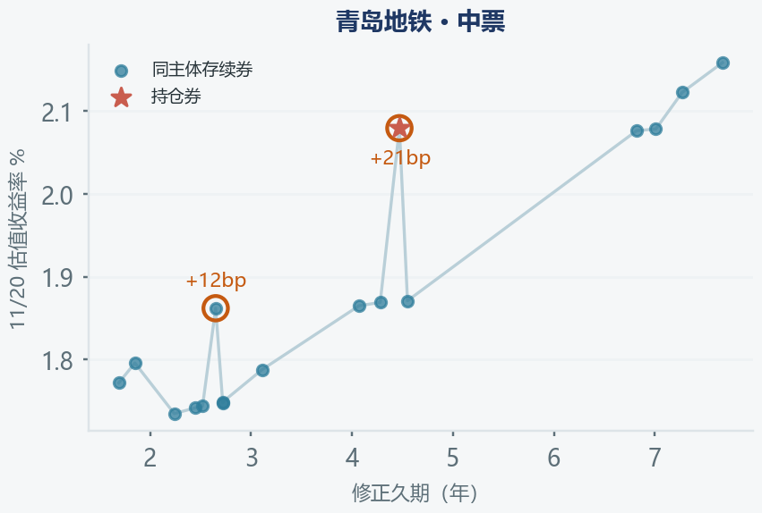
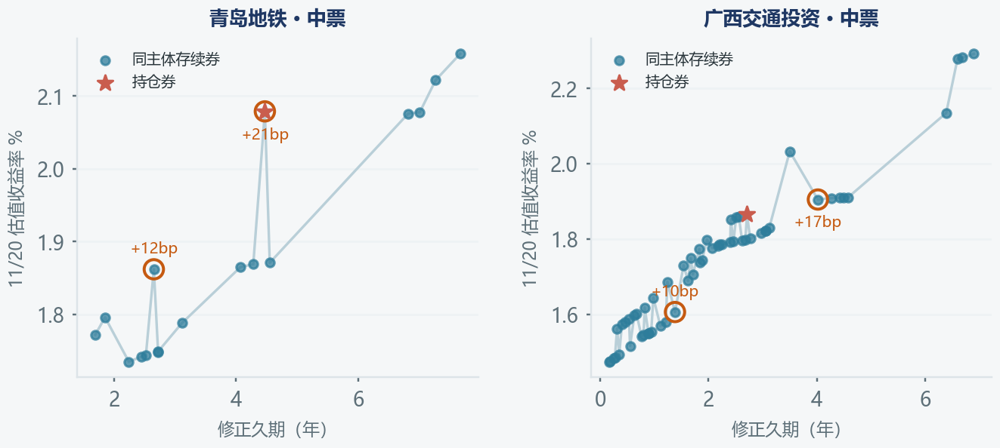
样本与窗口：中债估值 56,450 只，清洗后 49,231 只（收益率 0–30%，两轮调整绝对值 <200bp）。第一轮 10/29 → 10/30–11/06 峰值 → 11/06；第二轮 11/06 → 11/09–11/20 峰值 → 11/20。修复率＝(峰值−当前)/(峰值−期初)，仅对峰值调整 ≥2bp 的券计算；全部为中位口径。
券种分类：商业银行次级债券按简称拆分银行永续债 / 二级资本债；中票、公司债、企业债、私募债、定向工具、短融/超短融、ABS/ABN。城投用 YY 城投主体名单，产业用 YY 产业主体并剔除“类城投”；二永层级用 YY 金融主体所属行业。
余额：估值表“存量债券余额[债券类型]全部”是发行人合并口径、每只券重复，所有汇总均按发行人主体去重；分期限表内各桶余额不可相加。
久期与杠杆：修正久期取中债“久期”字段；优泰8 净值久期＝Σ(持仓市值×修正久期)/净资产，杠杆＝资产合计/净资产。非债券资产按零久期处理。
凸点：同一主体、同一券种、同一永续/普通条款分组，按修正久期排序，用相邻两只券线性插值得到该久期的“主体曲线”，个券估值减曲线为凸点；剔除 ABS/ABN，剔除 |凸点|>40bp 与久期超出 0.3–10 年。未剔除担保差异，仅作相对价值线索。
机构行为：每日成交投资者结构统计，源表只提供净额（净买入＝买入−卖出），无法拆出毛买入/毛卖出；跨机构合计与分期限合计均 ≈0，说明数据闭合。境外机构 2026 年起无数据，未纳入。二永对应源表“其他”列。
数据源：中债估值（10/29–11/20）、中债收益率曲线、DR001/DR007、YY 研究主体（2026-11-23）、每日成交投资者结构统计（2026-11-20）、优泰8号持仓表。